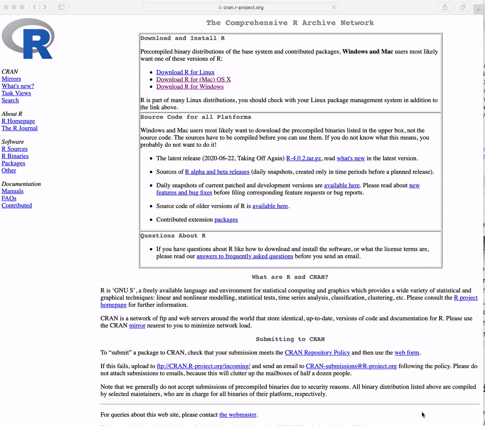

install.packages("tidyverse")Welcome! I am very excited to have you in our one-term (i.e. half a semester) course on Statistical Computing course number (140.776) offered by the Department of Biostatistics at the Johns Hopkins Bloomberg School of Public Health.
This course is designed for ScM and PhD students at Johns Hopkins Bloomberg School of Public Health. I am pretty flexible about permitting outside students, but I want everyone to be aware of the goals and assumptions so no one feels like they are surprised by how the class works.
Note
The primary goal of the course is to teach you practical programming and computational skills required for the research and application of statistical methods.
This class is not designed to teach the theoretical aspects of statistical or computational methods, but rather the goal is to help with the practical issues related to setting up a statistical computing environment for data analyses, developing high-quality R packages, conducting reproducible data analyses, best practices for data visualization and writing code, and creating websites for personal or project use.
Assumptions and pre-requisites
The course is designed for students in the Johns Hopkins Biostatistics Masters and PhD programs. However, we do not assume a significant background in statistics. Specifically we assume:
1. You know the basics of at least one programming language (e.g. R or Python)
- If it’s not R, we assume that you are willing to spend the time to learn R
- You have heard of things such as control structures, functions, loops, etc
- Know the difference between different data types (e.g. character, numeric, etc)
- Know the basics of plotting (e.g. what is a scatterplot, histogram, etc)
2. You know the basics of computing environments
- You have access to a computing environment (i.e. locally on a laptop or working in the cloud)
- You generally feel comfortable with installing and working with software
3. You know the basics of statistics
- The central dogma (estimates, standard errors, basic distributions, etc.)
- Key statistical terms and methods
- Differences between estimation vs testing vs prediction
- Know how to fit and interpret basic statistical models (e.g. linear models)
4. You know the basics of reproducible research
- Difference between replication and reproducible
- Know how to cite references (e.g. like in a publication)
- Somewhat familiar with tools that enable reproducible research (In complete transparency, we will briefly cover these topics in the first week, but depending on your comfort level with them, this may impact whether you choose to continue with the course).
Since the target audience for this course is advanced students in statistics we will not be able to spend significant time covering these concepts and technologies. To give you some idea about how these prerequisites will impact your experience in the course, we will be turning in all assignments via R Markdown documents and you will be encouraged (not required) to use git/GitHub to track changes to your code over time. The majority of the assignments will involve learning the practical issues around performing data analyses, building software packages, building websites, etc all using the R programming language. Data analyses you will perform will also often involve significant data extraction, cleaning, and transformation. We will learn about tools to do all of this, but hopefully most of this sounds familiar to you so you can focus on the concepts we will be teaching around best practices for statistical computing.
Tip
Some resources that may be useful if you feel you may be missing pieces of this background:
- Statistics - Mathematical Biostatistics Bootcamp I (Coursera); Mathematical Biostatistics Bootcamp II (Coursera)
- Basic Data Science - Cloud Data Science (Leanpub); Data Science Specialization (Coursera)
- Version Control - Github Learning Lab; Happy Git and Github for the useR
- Rmarkdown - Rmarkdown introduction
Getting set up
You must install R and RStudio on your computing environment in order to complete this course. These are two different applications that must be installed separately before they can be used together:
R is the core underlying programming language and computing engine that we will be learning in this course
RStudio is an interface into R that makes many aspects of using and programming R simpler
Both R and RStudio are available for Windows, macOS, and most flavors of Unix and Linux. Please download the version that is suitable for your computing setup.
Throughout the course, we will make use of numerous R add-on packages that must be installed over the Internet. Packages can be installed using the install.packages() function in R. For example, to install the tidyverse package, you can run
in the R console.
How to Download R for Windows
Go to https://cran.r-project.org and
Click the link to “Download R for Windows”
Click on “base”
Click on “Download R 4.2.1 for Windows”
Warning
The version in the video is not the latest version of R. Please download the latest version.

How to Download R for the Mac
Goto https://cran.r-project.org and
Click the link to “Download R for (Mac) OS X”.
Click on “R-4.2.1.pkg”
Warning
The version in the video is not the latest version of R. Please download the latest version.

How to Download RStudio
Goto https://rstudio.com and
Click on “Products” in the top menu
Then click on “RStudio” in the drop down menu
Click on “RStudio Desktop”
Click the button that says “DOWNLOAD RSTUDIO DESKTOP”
Click the button under “RStudio Desktop” Free
Under the section “All Installers” choose the file that is appropriate for your operating system.
Warning
NOTE: The video shows how to download RStudio for the Mac but you should download RStudio for whatever computing setup you have

Learning Objectives
The goal is by the end of the class, students will be able to:
- Install and configure software necessary for a statistical programming environment
- Discuss generic programming language concepts as they are implemented in a high-level statistical language
- Write and debug code in base R and the tidyverse (and integrate code from Python modules)
- Build basic data visualizations using R and the tidyverse
- Discuss best practices for coding and reproducible research, basics of data ethics, basics of working with special data types, and basics of storing data
Course Staff
The course instructor this year is Stephanie Hicks who is a Associate Professor in the Department of Biostatistics at the Johns Hopkins Bloomberg School of Public Health, a faculty member of the Johns Hopkins Data Science Lab, and have affiliations with the Malone Center for Engineering in Healthcare, Center for Computational Biology, the Department of Genetic Medicine, and the Department of Biochemistry and Molecular Biology.
My research focuses on developing fast, scalable, statistical methodology and open-source software for genomics and biomedical data analysis for human health and disease. My research is problem-forward: I develop statistical methods and software that are motivated by concrete problems, often with real-world, noisy, messy data. I’m also interested in developing theory for how to incorporate design thinking (alongside statistical thinking) in practice of data analysis.
If you want, you can find me on Twitter. I’m also a co-host of the The Corresponding Author podcast, member of the Editorial Board for Genome Biology, an Associate Editor for Reproducibility at the Journal of the American Statistical Association, and co-founder of R-Ladies Baltimore.
We also have a couple of amazing TAs this year:
- Phyllis Wei (ywei43@jhu.edu). She is … TBA… .
- Joe Sartini (jsartin1@jhu.edu). He is … TBA …
Course logistics
As with all things in a pandemic, we are offering two sections of this course. One option is to take the course in person (140.776.01) and the other option is to take it entirely virtually (140.776.41). You are welcome to register for either section.
- https://www.stephaniehicks.com/jhustatcomputing2022
All communication for the course is going to take place on one of three platforms:
Courseplus: for discussion, sharing resources, collaborating, and announcements
Github: for getting access to course materials (e.g. lectures, project assignments)
- Course Github: https://github.com/stephaniehicks/jhustatcomputing2022
In class: for live class lectures (recorded)
- Course Zoom: Link available on Courseplus
- The plan is for recorded lectures will be posted online after class ends
The primary communication for the class will go through Courseplus That is where we will post course announcements, host most of our asynchronous course discussion, and as the primary means of communication between course participants and course instructors.
Important
If you are registered for the course, you should have access to Courseplus now. Once you have access you will also be able to find the course Zoom links. Zoom links for office hours will also be posted on Courseplus.
Assignment Due Dates
All course assignment due dates appear on the Schedule and Syllabus.
The Pandemic
This is how 2020 felt:

While there are many positive things that have happened in 2021 and 2022, for many folks, 2021 and 2022 has not been much of an improvement

It is super tough to be dealing with the pandemic, an economic crisis, challenges with visas and travel and coordinating school online. As your instructor, I understand that this is not an ordinary year. I am ultra sympathetic to family challenges and life challenges. I have three small children (who may make cameos in lectures from time to time).
My goal is to make as much of the class asynchronous as possible so you can work whenever you have time. My plan is to be as understanding as possible when it comes to grading, and any issues that come up with the course. Please don’t hesitate to reach out to me (or the TAs) if you are having issues and we will do our best to direct you to whatever resources we have/accommodate you however we can.
I think the material in this course is important, fun, and this is an opportunity to learn a lot. But life is more important than a course and if there was ever a time that life might get in the way of learning, it’s likely now.
Grading
Philosophy
We believe the purpose of graduate education is to train you to be able to think for yourself and initiate and complete your own projects. We are super excited to talk to you about ideas, work out solutions with you, and help you to figure out how to produce professional data analyses. We do not think that graduate school grades are important for this purpose. This means that we do not care very much about graduate student grades.
That being said, we have to give you a grade so they will be:
- A - Excellent - 90%+
- B - Passing - 80%+
- C - Needs improvement - 70%+
We rarely give out grades below a C and if you consistently submit work, and do your best you are very likely to get an A or a B in the course.
Relative weights
The grades are based on three projects (plus one entirely optional project to help you get set up). The breakdown of grading will be
- 33% for Project 1
- 33% for Project 2
- 34% for Project 3
If you submit an project solution, it is your own work, and it meets a basic level of completeness and effort you will get 100% for that project. If you submit a project solution, but it doesn’t meet basic completeness and effort you will receive 50%. If you do not submit an solution you will receive 0%.
Submitting assignments
Please write up your project solutions using R Markdown. In some cases, you will compile a R Markdown file into an HTML file and submit your HTML file to the dropbox on Courseplus. In other cases, you may create an R package or website. In all of the above, when applicable, show all your code and provide as much explanation / documentation as you can.
For each project, we will provide a time when we download the materials. We will assume whatever version we download at that time is what you are turning in.
Reproducibility
We will talk about reproducibility a bit during class, and it will be a part of the homework assignments as well. Reproducibility of scientific code is very challenging, so the faculty and TAs completely understand difficulties that arise. But we think that it is important that you practice reproducible research. In particular, your project assignments should perform the tasks that you are asked to do and create the figures and tables you are asked to make as a part of the compilation of your document. We will have some pointers for some issues that have come up as we announce the projects.
Code of Conduct
We are committed to providing a welcoming, inclusive, and harassment-free experience for everyone, regardless of gender, gender identity and expression, age, sexual orientation, disability, physical appearance, body size, race, ethnicity, religion (or lack thereof), political beliefs/leanings, or technology choices. We do not tolerate harassment of course participants in any form. Sexual language and imagery is not appropriate for any work event, including group meetings, conferences, talks, parties, Twitter and other online media. This code of conduct applies to all course participants, including instructors and TAs, and applies to all modes of interaction, both in-person and online, including GitHub project repos, Slack channels, and Twitter.
Course participants violating these rules will be referred to leadership of the Department of Biostatistics and the Title IX coordinator at JHU and may face expulsion from the class.
All class participants agree to:
- Be considerate in speech and actions, and actively seek to acknowledge and respect the boundaries of other members.
- Be respectful. Disagreements happen, but do not require poor behavior or poor manners. Frustration is inevitable, but it should never turn into a personal attack. A community where people feel uncomfortable or threatened is not a productive one. Course participants should be respectful both of the other course participants and those outside the course.
- Refrain from demeaning, discriminatory, or harassing behavior and speech. Harassment includes, but is not limited to: deliberate intimidation; stalking; unwanted photography or recording; sustained or willful disruption of talks or other events; inappropriate physical contact; use of sexual or discriminatory imagery, comments, or jokes; and unwelcome sexual attention. If you feel that someone has harassed you or otherwise treated you inappropriately, please alert Stephanie Hicks.
- Take care of each other. Refrain from advocating for, or encouraging, any of the above behavior. And, if someone asks you to stop, then stop. Alert Stephanie Hicks if you notice a dangerous situation, someone in distress, or violations of this code of conduct, even if they seem inconsequential.
Need Help?
Please speak with Stephanie Hicks or one of the TAs. You can also reach out to Karen Bandeen-Roche, chair of the department of Biostatistics or Margaret Taub, Ombudsman for the Department of Biostatistics.
You may also reach out to any Hopkins resource for sexual harassment, discrimination, or misconduct:
- JHU Sexual Assault Helpline, 410-516-7333 (confidential)
- University Sexual Assault Response and Prevention website
- Johns Hopkins Compliance Hotline, 844-SPEAK2US (844-733-2528)
- Hopkins Policies Online
- JHU Office of Institutional Equity 410-516-8075 (nonconfidential)
- Johns Hopkins Student Assistance Program (JHSAP), 443-287-7000
- University Health Services, 410-955-1892
- The Faculty and Staff Assistance Program (FASAP), 443-997-7000
Feedback
We welcome feedback on this Code of Conduct.
License and attribution
This Code of Conduct is distributed under a Attribution-NonCommercial-ShareAlike 4.0 International (CC BY-NC-SA 4.0) license. Portions of above text comprised of language from the Codes of Conduct adopted by rOpenSci and Django, which are licensed by CC BY-SA 4.0 and CC BY 3.0. This work was further inspired by Ada Initiative’s ‘’how to design a code of conduct for your community’’ and Geek Feminism’s Code of conduct evaluations and expanded by Ashley Johnson and Shannon Ellis in the Jeff Leek group.
Academic Ethics
Students enrolled in the Bloomberg School of Public Health of The Johns Hopkins University assume an obligation to conduct themselves in a manner appropriate to the University’s mission as an institution of higher education. A student is obligated to refrain from acts which he or she knows, or under the circumstances has reason to know, impair the academic integrity of the University. Violations of academic integrity include, but are not limited to: cheating; plagiarism; knowingly furnishing false information to any agent of the University for inclusion in the academic record; violation of the rights and welfare of animal or human subjects in research; and misconduct as a member of either School or University committees or recognized groups or organizations.
Students should be familiar with the policies and procedures specified under Policy and Procedure Manual Student-01 (Academic Ethics), available on the school’s portal.
The faculty, staff and students of the Bloomberg School of Public Health and the Johns Hopkins University have the shared responsibility to conduct themselves in a manner that upholds the law and respects the rights of others. Students enrolled in the School are subject to the Student Conduct Code (detailed in Policy and Procedure Manual Student-06) and assume an obligation to conduct themselves in a manner which upholds the law and respects the rights of others. They are responsible for maintaining the academic integrity of the institution and for preserving an environment conducive to the safe pursuit of the School’s educational, research, and professional practice missions.
Disability Support Service
Students requiring accommodations for disabilities should register with Student Disability Service (SDS). It is the responsibility of the student to register for accommodations with SDS. Accommodations take effect upon approval and apply to the remainder of the time for which a student is registered and enrolled at the Bloomberg School of Public Health. Once you are f a student in your class has approved accommodations you will receive formal notification and the student will be encouraged to reach out. If you have questions about requesting accommodations, please contact BSPH.dss@jhu.edu.
Previous versions of the class
Typos and corrections
Feel free to submit typos/errors/etc via the github repository associated with the class: https://github.com/stephaniehicks/jhustatcomputing2022. You will have the thanks of your grateful instructor!